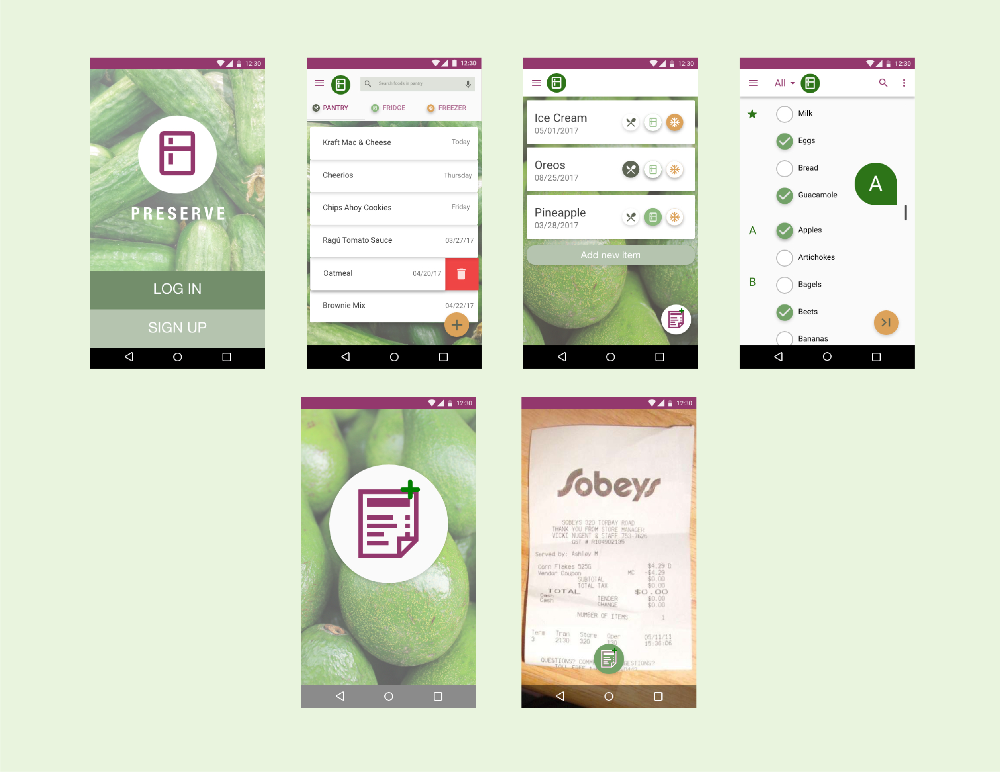
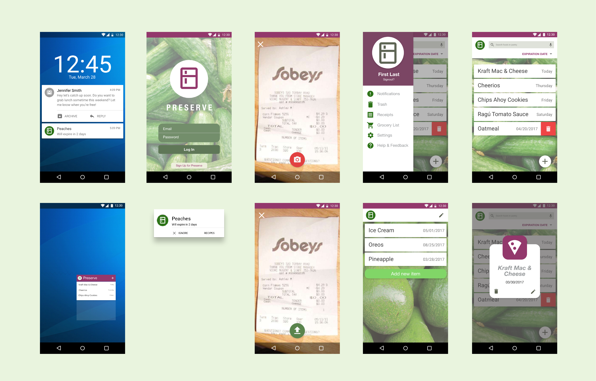

Preserve
Category
UI/UX Design, Android Frontend
Date
March 2017 - October 2017
Role
UX Designer at Mobile
Developers of Berkeley
App
Android
For 5 weeks in the fall of 2017, I was a new Android Developer in Mobile Developers of Berkeley, the premier mobile development club at UC Berkeley. During my first semester in the club, I consolidated my Android development training and worked to improve how grocery shoppers keep track of their foods and expiration dates.

Preserve is a mobile application that allows users to keep track of when their foods will expire. The app makes handling expiration dates faster and easier with OCR technology that scans receipts while also providing timely notifications.
My role in this project was to think through the flow of the app, prototype, create the UI/UX designs and implement them using Android Studio. I worked with Eric Kong, Sumukh Shivakumar, and Julia Luo to implement this project!
The Problem
At UC Berkeley, on one day, students threw away more than 450 pounds of food, the equivalent of 400 meals. Food waste is a problem: it's wasteful and resource intensive. After grocery shopping, refrigerators are crowded with food, making it difficult for students to keep track of when an item expires. However, a user's experience of adding food expiration dates into a mobile app is tedious and time intensive. The goal of this project was to improve this process so that users would have a more enjoyable and reliable experience inputting and managing food expiration dates. While promoting sustainability!
Research
I began to tackle this project by first conducting competitive analysis in order to understand how other mobile food tracking apps approach inputting food expiration dates.
Additionally, I interviewed Cal undergraduate students regarding their grocery shopping experience. I wanted to analyze how students living in both dormitories and apartments approached the entire food experience from grocery shopping, unpacking groceries, cooking, and discarding old produce.
Research Insights
From both user research and through competitive analysis, I established the following key ideas that guided both my team's construction of the mobile app and my design process.
- Students live with multiple people, ranging from 4 to 5 other students in their apartment. As a result, refridgerators are easily crowded and older foods get pushed to the back and forgotten in the process.
- There is no physical method that many users use to track their expiration dates. Instead they rely on memory. However, as I learned in The Design of Everyday Things by Don Norman, expiration dates are likely stored in short term memory as it is currently being used. However, this type of information is for everyday tasks that span longer periods, rending our working memory inefficient for remembering food expiration dates.
- All other food expiration tracking services require users to manually add each individual food item in order to receive timely notifications. This includes both the name of the item and the corresponding time the item expires.
Ideation
The design implication of these insights is to put the knowledge, in this case the food expiration dates, into the world. This removes the need for users to keep this information in their head, while making people more accurate. At the same time, people need to be reminded at the correct time, otherwise the stored information is not useful.
The major design deirections that I considered were expediting the food expiration input process, using a food expiration API to create smart notifications, and creating an interface that clearly showcases the items the user wants to see.
At this point in the process, some of the challenges that my team ran into were:
- We were unable to find a usable food expiration API. Without this resource, how should we collect expiration dates of items without making the user input the date each time? How do we create smart predictions?
- Should there be receipt scanning in the food collection process, and what would that experience be like? How would users edit text if the OCR technology failed?
- Off of the last point, how do we handle unstandardized conventions of writing food items on receipts? Does this affect the scanning?
Narrowing Project Scope
Based on our competitors and the feasibility of certain features, our team decided on the direction for the Preserve mobile app. As the most widespread issue with the user experience was tediously adding each individual food item, we decided to implement receipt scanning and explore the experience of scanning receipts and automatically adding those food items.
Sketches
Beginning work on the main screen of the app, I sketched out different ways of organizing food items based on their attributes - name, expiration date, category, and storage location.
While working on these sketches, I aimed to address the issues I found during the research process. I worked to make deleting food items at once easy and intuitive, food items and expiration dates more apparent, and detailed various ways to organize and display the information to make the food items that were going to expire noticeable.
Wireframes & Mockups
After going through my sketches, I started to develop wireframes using Adobe XD, thinking strongely about how users scanned receipts. This meant thinking about whether the main action was inputting new items or looking at old ones, as well as how users could correct the output of the OCR technology scan.
 Initial wireframes
Creating mid-fi wireframes helped me to better understand the layout and experience of the app. For instance, thinking about whether adding meant adding an individual item or scanning a receipt. Also, this process helped me recognize the need for simplicity so as not to overwhelm user's with additional features (featuritis). Thus, I eliminated the pantry divisions for categories of food items.
Finally, I created hi-fi mockups and implemented the designs in Android Studio.
 Final hifi designsBranding
Furthermore, I was charged with developing a logo, color scheme and banner that represented our app and our goal to help users eliminate food waste. Based on Material Design specifications, I developed both a flat icon and a banner that was consistent in style and colorful.
Redesign
In order to both improve the visuals of the app and to practice my visual and UI design abilities, I worked on a redesign following closely with Google's Material Design specifications. Based on the features that we actually implemented, I cleaned up the user experience to give the app a clean and fresh redesign that would make the food expiration process clearer, more simple, and more enjoyable.
Reflections
Thinking back on this project, I learned certain key takeaways:
- For improvement, I would want to conduct further testing on our working prototype/app. I would have wanted to get more feedback in between design iterations in order to better understand how people can use Preserve. Better late than never.
- Additionally, I would have wanted to talk to more companies and people in the span of food waste. Much of our research was based on direct competitors and I would have been more successful at targetin the problem and understanding the space by talking to other food companies such as Imperfect Produce.
- The design that we create should allow people to collaborate with machines rather than having people conforming to machines and the input that that technology requires. Users shouldn't have to deal with the nitty gritty of inputting food items and expiration dates. Rather, the experience must be flexible and take into account human error.
 The Preserve team ft. Abhinav
The Preserve team ft. Abhinav